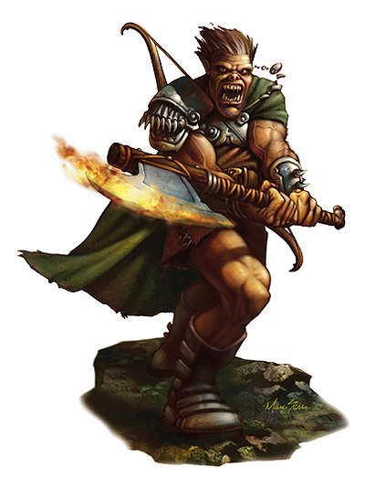

译自：《传奇等级手册(Epic Level Handbook)》第一章
原著：Andy Collins，Bruce R.Cordell以及Thomas M.Reid
翻译：玄音

传奇野蛮人(Epic Barbarian)
传奇级的野蛮人看起来十分恐怖。这种狂暴的战斗者就如同狂涛怒焰的具体化身，他们轻描淡掠地就能把眼前的对手撕作碎片，轻松得简直令人难以想像。
在选取增强全面伤害能力(以及伤害减免能力)的专长同时，你要把重点放在提高狂暴的威力上。混沌狂暴(Chaotic Rage [Epic])、咆哮(Thundering Rage [Epic])、以及其它可以提高狂暴威力的专长都是专门为传奇级的野蛮人量身定做的。传奇强壮(Epic Toughness [Epic])、伤害减少(Damage Reduction [Epic])、以及快速恢复(Fast Healing [Epic])等专长则可以让你在其他人都倒下之后，还能够支持着战斗相当长的一段时间，此外，拥有传奇跳跃(Legendary Leaper [Epic])专长的野蛮人，他的一跳真的是非常惊人。
在基本属性的提升上，你应该把点数投到力量和体质上，除非你为了满足某些专长的前提条件，而需要提升其它的属性。
其它选择：考虑沿着猛力攻击(Power Attack)这条专长链来选取专长，最后你可以获得致命一击(Devastating Critical [Epic])。如果你的豁免能力很差的话，请考虑传奇级的豁免强化类专长、改善法术抗力(Improved Spell Resistance [Epic])、或是元素抗力(Energy Resistance [Epic])。若是你真的打算拥有一名令人恐惧的野蛮人，那么闪电速度(Blinding Speed [Epic])就能让你做到这一点。
以下内容为程序代码:
表1-3：传奇野蛮人
野蛮人
职业等级 职业特性
21级 --
22级 直觉闪避(对陷阱+5)
23级 伤害减免 5/-
24级 野蛮人狂暴(每日7次)，额外专长
25级 直觉闪避(对陷阱+6)
26级 伤害减免 6/-
27级 --
28级 野蛮人狂暴(每日7次)，直觉闪避(对陷阱+7)，额外专长
29级 伤害减免 7/-
30级 --
生命骰：d12；
升级可得到的技能点数：4+智力调整值；
野蛮人狂暴(Barbarian Rage)：在20级之后，传奇野蛮人每升4级(24级、28级、32级、以此类推)，每日就可以再多获得1次的狂暴次数；(玄音注：原文表1-3的28 级职业特性里，居然没有写出野蛮人狂暴能力，估计是该死的马大哈Andy漏掉^^，我已经补上去了)
直觉闪避(Uncanny Dodge)：野蛮人对陷阱的豁免检定在19级之后，每升3级就再加1点(22级、25级、以此类推)；
伤害减免(Damage Reduction)：传奇野蛮人的伤害减免在20级之后，每升3级就再加1点(23级、26级、29级、以此类推)；
额外专长(Bonus Feats)：传奇野蛮人在20级之后，每升4级(24级、28级、32级、以此类推)就可以获得一项额外专长(这些额外专长必须从下面的“传奇野蛮人额外专长列表”中选取)；
传奇野蛮人额外专长列表：
装甲皮肤(Armor Skin [Epic])
混沌狂暴(Chaotic Rage [Epic])
伤害减少(Damage Reduction [Epic])
恐怖冲锋(Dire Charge [Epic])
传奇坚韧(Epic Endurance [Epic])
传奇战斗技巧(Epic Prowess [Epic])
传奇速度(Epic Speed[EPIC])
传奇强壮(Epic Toughness [Epic])
传奇武器专攻(Epic Weapon Focus [Epic])
快速恢复(Fast Healing [Epic])
激发狂暴(Incite Rage [Epic])
攀登专家(Legendary Climber [Epic])
传奇跳跃(Legendary Leaper [Epic])
传奇骑手(Legendary Rider [Epic])
传奇追踪者(Legendary Tracker [Epic])
传奇擒抱专家(Legendary Wrestler [Epic])
超级狂暴(Mighty Rage [Epic])
毁灭性重击(Overwhelming Critical [Epic])
破坏狂(Ruinous Rage [Epic])
恐怖狂暴(Terrifying Rage [Epic])
咆哮(Thundering Rage [Epic])